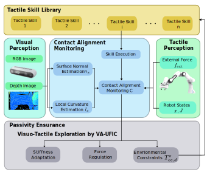
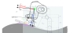

Visuo-Tactile Exploration of Unknown Rigid 3D Curvatures by Vision-Augmented Unified
Force-Impedance Control
This work proposes Vision-Augmented Unified
Force-Impedance Control (VA-UFIC),an innovative approach that aimed at intuitive visuo-
tactile exploration of unknown 3D curvatures
Introduction
Despite advancements in torque-controlled tactile robots,
their deployment for tactile and flexible interaction remains limited
due to the expertise required in control implementation. Real industrial tasks,
such as polishing car doors or carving metal, require a form and robust contact with the working surface.
This requires a fully precise environment model and accurate force-motion policies, which are both often absent in reality.
This paper addresses the gap between current robotic
capabilities and the demands of real-world applications,
proposing a novel approach towards developing simple yet
effective and intuitive robotic skill programming that does
not necessitate specialized control expertise for application:
visuo-tactile exploration of unknown rigid 3D curvatures
through vision-augmented unified force-impedance control
(VA-UFIC). By seamlessly integrating tactile and vision data
to span various contact shapes between the tool and the envi-
ronment, we develop a robust online contact alignment mon-
itoring system, considering factors, e.g., tactile error, local
surface curvature, and surface orientation. This information is
seamlessly integrated into a vision-augmented unified force-
impedance control framework, enabling the adjustment of
robot stiffness and force regulation while exploring unknown
rigid 3D curvatures. Visuo-tactile exploration is the next
step to completing a force-motion planning framework that
outputs an object-centric force-motion profile for an arbitrary
tactile skill policy.
Methology
Stability Analysis
Visuo-tactile pipeline that combines visual and tactile perception to monitor the contact alignment.
The robot will realign itself with detected surface normal and regenerates the force/motion policy when error detected.

Workflow.

Adaptation Process.
Experiments
Visuotactile
passivity ensurance
Image Gallery
 Give your image a caption. People love context.
Give your image a caption. People love context.
 Give your image a caption. People love context.
Give your image a caption. People love context.